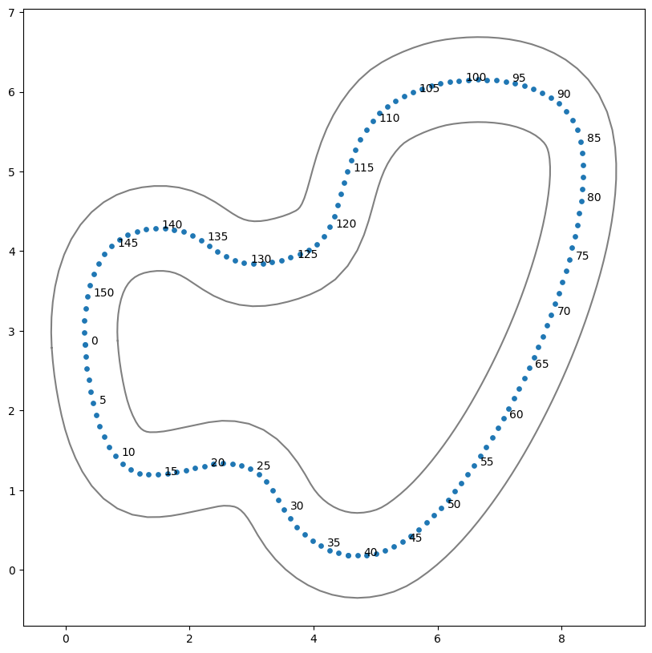

Track 시각화
Contents
Track 시각화#
Track github 레파지토리 가져오기#
Track 정보 확인 : https://github.com/aws-deepracer-community/deepracer-race-data/tree/main/raw_data/tracks
!git clone https://github.com/aws-deepracer-community/deepracer-race-data.git
Cloning into 'deepracer-race-data'...
remote: Enumerating objects: 241639, done.
remote: Counting objects: 0% (1/2032)
remote: Counting objects: 1% (21/2032)
remote: Counting objects: 2% (41/2032)
remote: Counting objects: 3% (61/2032)
remote: Counting objects: 4% (82/2032)
remote: Counting objects: 5% (102/2032)
remote: Counting objects: 6% (122/2032)
remote: Counting objects: 7% (143/2032)
remote: Counting objects: 8% (163/2032)
remote: Counting objects: 9% (183/2032)
remote: Counting objects: 10% (204/2032)
remote: Counting objects: 11% (224/2032)
remote: Counting objects: 12% (244/2032)
remote: Counting objects: 13% (265/2032)
remote: Counting objects: 14% (285/2032)
remote: Counting objects: 15% (305/2032)
remote: Counting objects: 16% (326/2032)
remote: Counting objects: 17% (346/2032)
remote: Counting objects: 18% (366/2032)
remote: Counting objects: 19% (387/2032)
remote: Counting objects: 20% (407/2032)
remote: Counting objects: 21% (427/2032)
remote: Counting objects: 22% (448/2032)
remote: Counting objects: 23% (468/2032)
remote: Counting objects: 24% (488/2032)
remote: Counting objects: 25% (508/2032)
remote: Counting objects: 26% (529/2032)
remote: Counting objects: 27% (549/2032)
remote: Counting objects: 28% (569/2032)
remote: Counting objects: 29% (590/2032)
remote: Counting objects: 30% (610/2032)
remote: Counting objects: 31% (630/2032)
remote: Counting objects: 32% (651/2032)
remote: Counting objects: 33% (671/2032)
remote: Counting objects: 34% (691/2032)
remote: Counting objects: 35% (712/2032)
remote: Counting objects: 36% (732/2032)
remote: Counting objects: 37% (752/2032)
remote: Counting objects: 38% (773/2032)
remote: Counting objects: 39% (793/2032)
remote: Counting objects: 40% (813/2032)
remote: Counting objects: 41% (834/2032)
remote: Counting objects: 42% (854/2032)
remote: Counting objects: 43% (874/2032)
remote: Counting objects: 44% (895/2032)
remote: Counting objects: 45% (915/2032)
remote: Counting objects: 46% (935/2032)
remote: Counting objects: 47% (956/2032)
remote: Counting objects: 48% (976/2032)
remote: Counting objects: 49% (996/2032)
remote: Counting objects: 50% (1016/2032)
remote: Counting objects: 51% (1037/2032)
remote: Counting objects: 52% (1057/2032)
remote: Counting objects: 53% (1077/2032)
remote: Counting objects: 54% (1098/2032)
remote: Counting objects: 55% (1118/2032)
remote: Counting objects: 56% (1138/2032)
remote: Counting objects: 57% (1159/2032)
remote: Counting objects: 58% (1179/2032)
remote: Counting objects: 59% (1199/2032)
remote: Counting objects: 60% (1220/2032)
remote: Counting objects: 61% (1240/2032)
remote: Counting objects: 62% (1260/2032)
remote: Counting objects: 63% (1281/2032)
remote: Counting objects: 64% (1301/2032)
remote: Counting objects: 65% (1321/2032)
remote: Counting objects: 66% (1342/2032)
remote: Counting objects: 67% (1362/2032)
remote: Counting objects: 68% (1382/2032)
remote: Counting objects: 69% (1403/2032)
remote: Counting objects: 70% (1423/2032)
remote: Counting objects: 71% (1443/2032)
remote: Counting objects: 72% (1464/2032)
remote: Counting objects: 73% (1484/2032)
remote: Counting objects: 74% (1504/2032)
remote: Counting objects: 75% (1524/2032)
remote: Counting objects: 76% (1545/2032)
remote: Counting objects: 77% (1565/2032)
remote: Counting objects: 78% (1585/2032)
remote: Counting objects: 79% (1606/2032)
remote: Counting objects: 80% (1626/2032)
remote: Counting objects: 81% (1646/2032)
remote: Counting objects: 82% (1667/2032)
remote: Counting objects: 83% (1687/2032)
remote: Counting objects: 84% (1707/2032)
remote: Counting objects: 85% (1728/2032)
remote: Counting objects: 86% (1748/2032)
remote: Counting objects: 87% (1768/2032)
remote: Counting objects: 88% (1789/2032)
remote: Counting objects: 89% (1809/2032)
remote: Counting objects: 90% (1829/2032)
remote: Counting objects: 91% (1850/2032)
remote: Counting objects: 92% (1870/2032)
remote: Counting objects: 93% (1890/2032)
remote: Counting objects: 94% (1911/2032)
remote: Counting objects: 95% (1931/2032)
remote: Counting objects: 96% (1951/2032)
remote: Counting objects: 97% (1972/2032)
remote: Counting objects: 98% (1992/2032)
remote: Counting objects: 99% (2012/2032)
remote: Counting objects: 100% (2032/2032)
remote: Counting objects: 100% (2032/2032), done.
remote: Compressing objects: 0% (1/671)
remote: Compressing objects: 1% (7/671)
remote: Compressing objects: 2% (14/671)
remote: Compressing objects: 3% (21/671)
remote: Compressing objects: 4% (27/671)
remote: Compressing objects: 5% (34/671)
remote: Compressing objects: 6% (41/671)
remote: Compressing objects: 7% (47/671)
remote: Compressing objects: 8% (54/671)
remote: Compressing objects: 9% (61/671)
remote: Compressing objects: 10% (68/671)
remote: Compressing objects: 11% (74/671)
remote: Compressing objects: 12% (81/671)
remote: Compressing objects: 13% (88/671)
remote: Compressing objects: 14% (94/671)
remote: Compressing objects: 15% (101/671)
remote: Compressing objects: 16% (108/671)
remote: Compressing objects: 17% (115/671)
remote: Compressing objects: 18% (121/671)
remote: Compressing objects: 19% (128/671)
remote: Compressing objects: 20% (135/671)
remote: Compressing objects: 21% (141/671)
remote: Compressing objects: 22% (148/671)
remote: Compressing objects: 23% (155/671)
remote: Compressing objects: 24% (162/671)
remote: Compressing objects: 25% (168/671)
remote: Compressing objects: 26% (175/671)
remote: Compressing objects: 27% (182/671)
remote: Compressing objects: 28% (188/671)
remote: Compressing objects: 29% (195/671)
remote: Compressing objects: 30% (202/671)
remote: Compressing objects: 31% (209/671)
remote: Compressing objects: 32% (215/671)
remote: Compressing objects: 33% (222/671)
remote: Compressing objects: 34% (229/671)
remote: Compressing objects: 35% (235/671)
remote: Compressing objects: 36% (242/671)
remote: Compressing objects: 37% (249/671)
remote: Compressing objects: 38% (255/671)
remote: Compressing objects: 39% (262/671)
remote: Compressing objects: 40% (269/671)
remote: Compressing objects: 41% (276/671)
remote: Compressing objects: 42% (282/671)
remote: Compressing objects: 43% (289/671)
remote: Compressing objects: 44% (296/671)
remote: Compressing objects: 45% (302/671)
remote: Compressing objects: 46% (309/671)
remote: Compressing objects: 47% (316/671)
remote: Compressing objects: 48% (323/671)
remote: Compressing objects: 49% (329/671)
remote: Compressing objects: 50% (336/671)
remote: Compressing objects: 51% (343/671)
remote: Compressing objects: 52% (349/671)
remote: Compressing objects: 53% (356/671)
remote: Compressing objects: 54% (363/671)
remote: Compressing objects: 55% (370/671)
remote: Compressing objects: 56% (376/671)
remote: Compressing objects: 57% (383/671)
remote: Compressing objects: 58% (390/671)
remote: Compressing objects: 59% (396/671)
remote: Compressing objects: 60% (403/671)
remote: Compressing objects: 61% (410/671)
remote: Compressing objects: 62% (417/671)
remote: Compressing objects: 63% (423/671)
remote: Compressing objects: 64% (430/671)
remote: Compressing objects: 65% (437/671)
remote: Compressing objects: 66% (443/671)
remote: Compressing objects: 67% (450/671)
remote: Compressing objects: 68% (457/671)
remote: Compressing objects: 69% (463/671)
remote: Compressing objects: 70% (470/671)
remote: Compressing objects: 71% (477/671)
remote: Compressing objects: 72% (484/671)
remote: Compressing objects: 73% (490/671)
remote: Compressing objects: 74% (497/671)
remote: Compressing objects: 75% (504/671)
remote: Compressing objects: 76% (510/671)
remote: Compressing objects: 77% (517/671)
remote: Compressing objects: 78% (524/671)
remote: Compressing objects: 79% (531/671)
remote: Compressing objects: 80% (537/671)
remote: Compressing objects: 81% (544/671)
remote: Compressing objects: 82% (551/671)
remote: Compressing objects: 83% (557/671)
remote: Compressing objects: 84% (564/671)
remote: Compressing objects: 85% (571/671)
remote: Compressing objects: 86% (578/671)
remote: Compressing objects: 87% (584/671)
remote: Compressing objects: 88% (591/671)
remote: Compressing objects: 89% (598/671)
remote: Compressing objects: 90% (604/671)
remote: Compressing objects: 91% (611/671)
remote: Compressing objects: 92% (618/671)
remote: Compressing objects: 93% (625/671)
remote: Compressing objects: 94% (631/671)
remote: Compressing objects: 95% (638/671)
remote: Compressing objects: 96% (645/671)
remote: Compressing objects: 97% (651/671)
remote: Compressing objects: 98% (658/671)
remote: Compressing objects: 99% (665/671)
remote: Compressing objects: 100% (671/671)
remote: Compressing objects: 100% (671/671), done.
Receiving objects: 0% (1/241639)
Receiving objects: 1% (2417/241639)
Receiving objects: 2% (4833/241639)
Receiving objects: 3% (7250/241639)
Receiving objects: 4% (9666/241639)
Receiving objects: 5% (12082/241639)
Receiving objects: 6% (14499/241639), 1.95 MiB | 3.87 MiB/s
Receiving objects: 7% (16915/241639), 1.95 MiB | 3.87 MiB/s
Receiving objects: 8% (19332/241639), 1.95 MiB | 3.87 MiB/s
Receiving objects: 9% (21748/241639), 1.95 MiB | 3.87 MiB/s
Receiving objects: 10% (24164/241639), 1.95 MiB | 3.87 MiB/s
Receiving objects: 11% (26581/241639), 1.95 MiB | 3.87 MiB/s
Receiving objects: 12% (28997/241639), 1.95 MiB | 3.87 MiB/s
Receiving objects: 13% (31414/241639), 1.95 MiB | 3.87 MiB/s
Receiving objects: 13% (32642/241639), 1.95 MiB | 3.87 MiB/s
Receiving objects: 14% (33830/241639), 4.92 MiB | 4.90 MiB/s
Receiving objects: 15% (36246/241639), 7.96 MiB | 5.30 MiB/s
Receiving objects: 15% (36763/241639), 7.96 MiB | 5.30 MiB/s
Receiving objects: 15% (37918/241639), 13.79 MiB | 5.49 MiB/s
Receiving objects: 16% (38663/241639), 19.63 MiB | 5.59 MiB/s
Receiving objects: 16% (39393/241639), 19.63 MiB | 5.59 MiB/s
Receiving objects: 16% (39713/241639), 25.57 MiB | 5.66 MiB/s
Receiving objects: 17% (41079/241639), 31.36 MiB | 5.86 MiB/s
Receiving objects: 17% (41445/241639), 31.36 MiB | 5.86 MiB/s
Receiving objects: 17% (42263/241639), 37.13 MiB | 5.83 MiB/s
Receiving objects: 18% (43496/241639), 42.71 MiB | 5.75 MiB/s
Receiving objects: 18% (44373/241639), 42.71 MiB | 5.75 MiB/s
Receiving objects: 19% (45912/241639), 45.57 MiB | 5.75 MiB/s
Receiving objects: 19% (46328/241639), 48.41 MiB | 5.74 MiB/s
Receiving objects: 19% (46497/241639), 54.14 MiB | 5.70 MiB/s
Receiving objects: 20% (48328/241639), 59.89 MiB | 5.66 MiB/s
Receiving objects: 20% (48878/241639), 59.89 MiB | 5.66 MiB/s
Receiving objects: 20% (50184/241639), 65.73 MiB | 5.74 MiB/s
Receiving objects: 21% (50745/241639), 71.45 MiB | 5.74 MiB/s
Receiving objects: 21% (50785/241639), 71.45 MiB | 5.74 MiB/s
Receiving objects: 21% (51849/241639), 77.18 MiB | 5.75 MiB/s
Receiving objects: 21% (52231/241639), 82.93 MiB | 5.74 MiB/s
Receiving objects: 22% (53161/241639), 88.82 MiB | 5.76 MiB/s
Receiving objects: 22% (53850/241639), 88.82 MiB | 5.76 MiB/s
Receiving objects: 22% (55486/241639), 94.63 MiB | 5.74 MiB/s
Receiving objects: 23% (55577/241639), 97.47 MiB | 5.75 MiB/s
Receiving objects: 23% (56097/241639), 100.46 MiB | 5.78 MiB/s
Receiving objects: 23% (56708/241639), 106.40 MiB | 5.83 MiB/s
Receiving objects: 23% (57250/241639), 112.17 MiB | 5.83 MiB/s
Receiving objects: 24% (57994/241639), 117.94 MiB | 5.81 MiB/s
Receiving objects: 24% (58367/241639), 117.94 MiB | 5.81 MiB/s
Receiving objects: 24% (59729/241639), 123.84 MiB | 5.85 MiB/s
Receiving objects: 24% (60144/241639), 129.62 MiB | 5.82 MiB/s
Receiving objects: 25% (60410/241639), 135.36 MiB | 5.78 MiB/s
Receiving objects: 26% (62827/241639), 135.36 MiB | 5.78 MiB/s
Receiving objects: 26% (65193/241639), 135.36 MiB | 5.78 MiB/s
Receiving objects: 27% (65243/241639), 135.36 MiB | 5.78 MiB/s
Receiving objects: 28% (67659/241639), 135.36 MiB | 5.78 MiB/s
Receiving objects: 29% (70076/241639), 135.36 MiB | 5.78 MiB/s
Receiving objects: 30% (72492/241639), 138.31 MiB | 5.78 MiB/s
Receiving objects: 31% (74909/241639), 138.31 MiB | 5.78 MiB/s
Receiving objects: 32% (77325/241639), 138.31 MiB | 5.78 MiB/s
Receiving objects: 33% (79741/241639), 138.31 MiB | 5.78 MiB/s
Receiving objects: 34% (82158/241639), 138.31 MiB | 5.78 MiB/s
Receiving objects: 35% (84574/241639), 138.31 MiB | 5.78 MiB/s
Receiving objects: 36% (86991/241639), 138.31 MiB | 5.78 MiB/s
Receiving objects: 37% (89407/241639), 138.31 MiB | 5.78 MiB/s
Receiving objects: 38% (91823/241639), 138.31 MiB | 5.78 MiB/s
Receiving objects: 39% (94240/241639), 141.28 MiB | 5.82 MiB/s
Receiving objects: 40% (96656/241639), 141.28 MiB | 5.82 MiB/s
Receiving objects: 41% (99072/241639), 141.28 MiB | 5.82 MiB/s
Receiving objects: 42% (101489/241639), 141.28 MiB | 5.82 MiB/s
Receiving objects: 43% (103905/241639), 141.28 MiB | 5.82 MiB/s
Receiving objects: 44% (106322/241639), 141.28 MiB | 5.82 MiB/s
Receiving objects: 45% (108738/241639), 141.28 MiB | 5.82 MiB/s
Receiving objects: 46% (111154/241639), 141.28 MiB | 5.82 MiB/s
Receiving objects: 46% (112461/241639), 141.28 MiB | 5.82 MiB/s
Receiving objects: 47% (113571/241639), 141.28 MiB | 5.82 MiB/s
Receiving objects: 48% (115987/241639), 141.28 MiB | 5.82 MiB/s
Receiving objects: 49% (118404/241639), 144.27 MiB | 5.82 MiB/s
Receiving objects: 50% (120820/241639), 144.27 MiB | 5.82 MiB/s
Receiving objects: 51% (123236/241639), 144.27 MiB | 5.82 MiB/s
Receiving objects: 52% (125653/241639), 144.27 MiB | 5.82 MiB/s
Receiving objects: 53% (128069/241639), 144.27 MiB | 5.82 MiB/s
Receiving objects: 54% (130486/241639), 144.27 MiB | 5.82 MiB/s
Receiving objects: 55% (132902/241639), 144.27 MiB | 5.82 MiB/s
Receiving objects: 56% (135318/241639), 144.27 MiB | 5.82 MiB/s
Receiving objects: 57% (137735/241639), 144.27 MiB | 5.82 MiB/s
Receiving objects: 58% (140151/241639), 144.27 MiB | 5.82 MiB/s
Receiving objects: 59% (142568/241639), 144.27 MiB | 5.82 MiB/s
Receiving objects: 60% (144984/241639), 144.27 MiB | 5.82 MiB/s
Receiving objects: 61% (147400/241639), 144.27 MiB | 5.82 MiB/s
Receiving objects: 62% (149817/241639), 147.17 MiB | 5.79 MiB/s
Receiving objects: 63% (152233/241639), 147.17 MiB | 5.79 MiB/s
Receiving objects: 64% (154649/241639), 147.17 MiB | 5.79 MiB/s
Receiving objects: 65% (157066/241639), 147.17 MiB | 5.79 MiB/s
Receiving objects: 66% (159482/241639), 147.17 MiB | 5.79 MiB/s
Receiving objects: 67% (161899/241639), 147.17 MiB | 5.79 MiB/s
Receiving objects: 68% (164315/241639), 147.17 MiB | 5.79 MiB/s
Receiving objects: 69% (166731/241639), 147.17 MiB | 5.79 MiB/s
Receiving objects: 70% (169148/241639), 147.17 MiB | 5.79 MiB/s
Receiving objects: 71% (171564/241639), 147.17 MiB | 5.79 MiB/s
Receiving objects: 72% (173981/241639), 147.17 MiB | 5.79 MiB/s
Receiving objects: 73% (176397/241639), 147.17 MiB | 5.79 MiB/s
Receiving objects: 73% (176834/241639), 147.17 MiB | 5.79 MiB/s
Receiving objects: 74% (178813/241639), 147.17 MiB | 5.79 MiB/s
Receiving objects: 75% (181230/241639), 147.17 MiB | 5.79 MiB/s
Receiving objects: 76% (183646/241639), 150.07 MiB | 5.80 MiB/s
Receiving objects: 77% (186063/241639), 150.07 MiB | 5.80 MiB/s
Receiving objects: 78% (188479/241639), 150.07 MiB | 5.80 MiB/s
Receiving objects: 79% (190895/241639), 150.07 MiB | 5.80 MiB/s
Receiving objects: 80% (193312/241639), 150.07 MiB | 5.80 MiB/s
Receiving objects: 81% (195728/241639), 150.07 MiB | 5.80 MiB/s
Receiving objects: 82% (198144/241639), 150.07 MiB | 5.80 MiB/s
Receiving objects: 83% (200561/241639), 150.07 MiB | 5.80 MiB/s
Receiving objects: 84% (202977/241639), 150.07 MiB | 5.80 MiB/s
Receiving objects: 85% (205394/241639), 150.07 MiB | 5.80 MiB/s
Receiving objects: 86% (207810/241639), 150.07 MiB | 5.80 MiB/s
Receiving objects: 87% (210226/241639), 150.07 MiB | 5.80 MiB/s
Receiving objects: 88% (212643/241639), 150.07 MiB | 5.80 MiB/s
Receiving objects: 89% (215059/241639), 150.07 MiB | 5.80 MiB/s
Receiving objects: 90% (217476/241639), 150.07 MiB | 5.80 MiB/s
Receiving objects: 91% (219892/241639), 150.07 MiB | 5.80 MiB/s
Receiving objects: 92% (222308/241639), 150.07 MiB | 5.80 MiB/s
Receiving objects: 93% (224725/241639), 150.07 MiB | 5.80 MiB/s
Receiving objects: 94% (227141/241639), 153.11 MiB | 5.84 MiB/s
Receiving objects: 95% (229558/241639), 153.11 MiB | 5.84 MiB/s
Receiving objects: 96% (231974/241639), 153.11 MiB | 5.84 MiB/s
Receiving objects: 97% (234390/241639), 153.11 MiB | 5.84 MiB/s
Receiving objects: 98% (236807/241639), 153.11 MiB | 5.84 MiB/s
Receiving objects: 99% (239223/241639), 153.11 MiB | 5.84 MiB/s
Receiving objects: 99% (241240/241639), 153.11 MiB | 5.84 MiB/s
remote: Total 241639 (delta 1374), reused 2018 (delta 1360), pack-reused 239607
Receiving objects: 100% (241639/241639), 156.08 MiB | 5.86 MiB/s
Receiving objects: 100% (241639/241639), 156.67 MiB | 5.76 MiB/s, done.
Resolving deltas: 0% (0/173408)
Resolving deltas: 1% (1735/173408)
Resolving deltas: 2% (3469/173408)
Resolving deltas: 3% (5203/173408)
Resolving deltas: 4% (6937/173408)
Resolving deltas: 5% (8671/173408)
Resolving deltas: 6% (10405/173408)
Resolving deltas: 7% (12139/173408)
Resolving deltas: 8% (13873/173408)
Resolving deltas: 9% (15607/173408)
Resolving deltas: 10% (17341/173408)
Resolving deltas: 11% (19075/173408)
Resolving deltas: 12% (20809/173408)
Resolving deltas: 13% (22544/173408)
Resolving deltas: 14% (24278/173408)
Resolving deltas: 15% (26012/173408)
Resolving deltas: 16% (27746/173408)
Resolving deltas: 17% (29480/173408)
Resolving deltas: 18% (31214/173408)
Resolving deltas: 19% (32948/173408)
Resolving deltas: 20% (34682/173408)
Resolving deltas: 21% (36416/173408)
Resolving deltas: 22% (38150/173408)
Resolving deltas: 23% (39884/173408)
Resolving deltas: 24% (41618/173408)
Resolving deltas: 25% (43352/173408)
Resolving deltas: 26% (45087/173408)
Resolving deltas: 27% (46821/173408)
Resolving deltas: 28% (48555/173408)
Resolving deltas: 29% (50289/173408)
Resolving deltas: 30% (52023/173408)
Resolving deltas: 31% (53757/173408)
Resolving deltas: 32% (55491/173408)
Resolving deltas: 33% (57225/173408)
Resolving deltas: 34% (58959/173408)
Resolving deltas: 35% (60693/173408)
Resolving deltas: 36% (62427/173408)
Resolving deltas: 37% (64161/173408)
Resolving deltas: 38% (65896/173408)
Resolving deltas: 39% (67630/173408)
Resolving deltas: 40% (69364/173408)
Resolving deltas: 41% (71098/173408)
Resolving deltas: 42% (72832/173408)
Resolving deltas: 43% (74566/173408)
Resolving deltas: 44% (76300/173408)
Resolving deltas: 45% (78034/173408)
Resolving deltas: 46% (79768/173408)
Resolving deltas: 47% (81502/173408)
Resolving deltas: 48% (83236/173408)
Resolving deltas: 49% (84970/173408)
Resolving deltas: 50% (86704/173408)
Resolving deltas: 51% (88439/173408)
Resolving deltas: 51% (88883/173408)
Resolving deltas: 52% (90173/173408)
Resolving deltas: 53% (91907/173408)
Resolving deltas: 54% (93641/173408)
Resolving deltas: 55% (95375/173408)
Resolving deltas: 56% (97109/173408)
^C
라이브러리 가져오기#
import os
import math
import pandas as pd
import numpy as np
import matplotlib.pyplot as plt
트랙 시각화 함수#
def track_show(track_arr, interval = 1, title = None, figsize = (10,10)):
# 트랙 waypoint 가져오기
track_C = track_arr[:,[0,1]] # 트랙 중심 좌표
track_L = track_arr[:,[2,3]] # 트랙 좌측 좌표
track_R = track_arr[:,[4,5]] # 트랙 우측 좌표
# 시각화
plt.figure(figsize = figsize)
plt.scatter(track_C[:,0],track_C[:,1], s = 15)
plt.plot(track_L[:,0],track_L[:,1], c='gray')
plt.plot(track_R[:,0],track_R[:,1], c='gray')
# index 표시
for i, (x, y) in enumerate(track_C) :
if i % interval == 0 :
plt.text(x+0.1, y, i, fontsize=10)
# 출력
plt.title(title)
plt.show()
시각화#
numpy_file_name : numpy 파일명
track_show 변수
interval : 웨이포인트 인덱스 표시 간격 (default = 1)
figsize : 이미지 크기 (default = (10,10))
numpy_file_name = "reInvent2019_track.npy"
numpy_file_folder = "deepracer-race-data/raw_data/tracks/npy"
numpy_file_path = os.path.join(numpy_file_folder,numpy_file_name)
track_arr = np.load(numpy_file_path)
track_show(track_arr, interval = 5)
